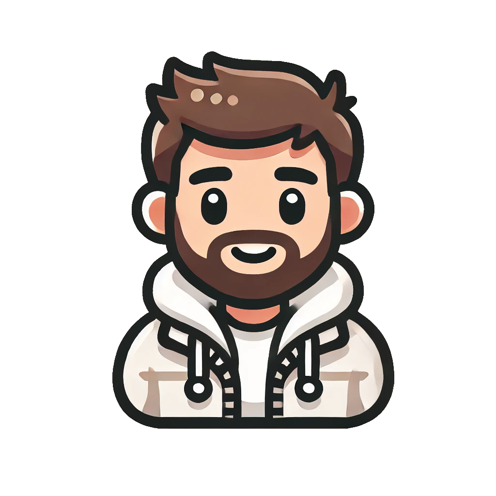

A freshman student of computer programming in KTO Karatay university.

Intro
I was born and raised in Jordan where I grew up in a Amman city. In fall 2021 I went to Turkey to continue my education . I joined KTO Karatay university in fall 2024. I am a freshman learning programming languages such as (c,c++,and java), also i am learning web development.